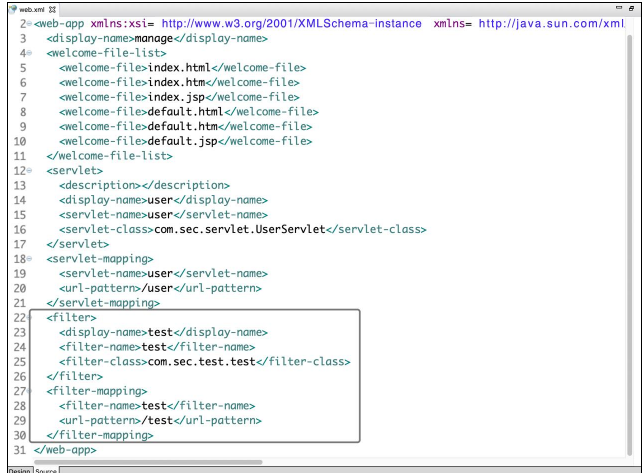

Java 平台有 3 个主要版本，分别是 Java SE（Java Platform Standard Edition，Java平台标准版）、Java EE（Java Platform Enterprise Edition，Java 平台企业版）和 Java ME（Java Platform Micro Edition，Java 平台微型版）。其中，Java EE 是 Java 应用最广泛的版本。Java EE 也称为 Java 2 Platform 或 Enterprise Edition（J2EE）。Java EE 可以说是一个框架，也可以说是一种规范。
Java EE 分层模型¶
Java EE 的核心技术¶
Java EE 的核心技术有很多，包括 JDBC、JNDI、EJB、RMI、Servlet、JSP、XML、JMS、Java IDL、JTS、JTA、JavaMail 和 JAF。这里仅解释部分常用技术的释义。
-
Java数据库连接(Java Database Connectivity , JDBC) 在Java中用来规范客户端程序如何访问数据库的应用程序接口，提供了诸如查询和更新数据库中数据的方法
-
Java命令和目录接口(Java Naming and Directory Interface,JNDI)是Java的一个目录服务应用程序界面(API),它提供了一个目录系统，并将服务名称与对象关联起来，从而使得开发人员在开发过程中可以用名称来访问对象。
- 企业级 JavaBean（Enterprise JavaBean，EJB）是一个用来构筑企业级应用的、在服务器端可被管理的组件。
- 远程方法调用（Remote Method Invocation，RMI）是 Java 的一组拥护开发分布式应用程序的 API,它大大增强了 Java 开发分布式应用的能力。
- 可扩展标记语言（eXtensible Markup Language，XML）是被设计用于传输和存储数据的语言。
- Java 消息服务（Java Message Service，JMS）是一个 Java 平台中关于面向消息中间件（MOM）的 API，用于在两个应用程序之间或分布式系统中发送消息，进行异步通信。
- JSP（JavaServer Pages）是由 Sun 公司主导并创建的一种动态网页技术标准。JSP 部署于网络服务器上，可以响应客户端发送的请求，并根据请求内容动态生成HTML、XML 或其他格式文档的 Web 网页，然后返回给请求者。
Java EE 分层模型¶
Java EE 应用的分层模型主要分为以下 5 层。
- Domain Object（领域对象）层：本层由一系列 POJO（Plain Old Java Object，普通的、传统的 Java 对象）组成，这些对象是该系统的 Domain Object，通常包含各自所需实现的业务逻辑方法。
- DAO（Data Access Object，数据访问对象）层：本层由一系列 DAO 组件组成，这些 DAO 实现了对数据库的创建、查询、更新和删除等操作。
- Service（业务逻辑）层：本层由一系列的业务逻辑对象组成，这些业务逻辑对象实现了系统所需要的业务逻辑方法。
- Controller（控制器）层：本层由一系列控制器组成，这些控制器用于拦截用户的请求，并调用业务逻辑组件的业务逻辑方法去处理用户请求，然后根据处理结果向不同的 View 组件转发。
- View（表现）层：本层由一系列的页面及视图组件组成，负责收集用户请求，并显示处理后的结果
如下图所示，首先由数据库给 Domain Object 层提供持久化服务，然后由Domain Object 层去封装 DAO 层，DAO 层为业务逻辑层提供数据访问服务，接着业务逻辑层为控制器层提供逻辑支持，最终在表现层显示结果。
Java EE 分层模型的应用，使得项目易于维护，管理简化，并且适应大规模和复杂的应用需求以及不断变化的业务需求。此外，分层模型还能有效提高系统并发处理能力。
MVC 模式与 MVC 框架¶
在对某一项目进行代码审计时，我们需要从其输入、处理和输出来审计漏洞，遵循 MVC（Model View Controller）思想。在 MVC 应用程序中，有 3 个主要的核心部件，分别是模型、视图、控制器，它们独立处理各自的任务，这种分离的思想使得我们在审计时能够抓住关键问题，而不用关心类似于界面显示等无关紧要的问题。
Java MVC 模式¶
MVC 的概念¶
MVC 全名是 Model View Controller，M（Model）是指数据模型，V（View）是指用户界面，C（Controller）是控制器。使用 MVC 最直接的目的就是将M和V实现代码分离，C 则是确保 M 和V 的同步，一旦 M 改变，V 就应该同步更新。简单来说，MVC 是一个设计模式，它强制性地使应用程序的输入、处理和输出分开。MVC 应用程序被分成 3 个核心部件：Model、View、Controller。它们独立处理各自的任务。
Java MVC 模式与普通 MVC 的区别不大，具体如下。
- 模型（Model）：表示携带数据的对象或 Java POJO。即使模型内的数据改变，它也具有逻辑来更新控制器。
- 控制器（Controller）：表示逻辑控制，控制器对模型和视图都有作用，控制数据流进入模型对象，并在数据更改时更新视图，是视图和模型的中间层。
- 视图（View）：表示模型包含的数据的可视化层。
MVC 工作流程¶
MVC 的工作流程也很容易理解。首先，Controller 层接收用户的请求，并决定应该调用哪个 Model 来进行处理；然后，由 Model 使用逻辑处理用户的请求并返回数S据；最后，返回的数据通过 View 层呈现给用户。
MVC 模式使视图层和业务层分离，以便更改 View 层代码时，不用重新编译Model 和 Controller 代码。同样，当某个应用的业务流程或者业务规则发生改变时，只需要改动 Model 层即可实现需求。
Java MVC 框架¶
Java MVC 的框架有很多，如比较经典的 Struts1 框架、Struts2 框架、Spring MVC框架，此外还有小众的 JSF 框架以及 Tapestry 框架。下面简单介绍这些框架。
- Struts1 框架：Struts 是较早的 Java 开源框架之一，它是 MVC 设计模式的一个优秀实现。Struts1 框架基于 MVC 模式定义了通用的 Controller，通过配置文件分离了Model 和 View，通过 Action 对用户请求进行了封装，使代码更加清晰、易读，整个项目也更易管理。
- Struts2 框架：Struts2 框架并不是单纯由 Struts1 版本升级而来，而是 Apache 根据一个名为 WebWork 的项目发展而来的，所以两者的关系并不大。Struts2 框架同样是一个基于 MVC 设计模式的 Web 应用框架，它本质上相当于一个 Servlet。在MVC 设计模式中，Struts2 作为控制器来建立模型与视图的数据交互。
- Spring MVC 框架：Spring MVC 是一个基于 MVC 思想的优秀应用框架,它是Spring 的一个子框架，也是一个非常优秀的 MVC 框架。Spring MVC 角色划分清晰，分工明细，并且与 Spring 框架无缝结合。作为当今业界最主流的 Web 开发框架，Spring MVC 框架已经成为当前最热门的开发技能之一，同时也广泛用于桌面开发领域。
- JSF 框架：JSF 框架是一个用于构建 Java Web 应用程序的标准框架，也是一个MVC Web 应用框架，它提供了一种以组件为中心的用户界面（UI）构建方法，从而简化了 Java 服务器端应用程序的开发。
- Tapestry 框架：Tapestry 框架也是一种基于 Java 的 Web 应用程序框架，与上述4 款框架相比，Tapestry 并不是一种单纯的 MVC 框架，它更像 MVC 框架和模板技术的结合，不仅包含前端的 MVC 框架，还包含一种视图层的模板技术，并使用Tapestry 完全与 Servlet/JSP API 分离，是一种非常优秀的设计。相对于现有的其他Web 应用程序框架而言，Tapestry 框架会帮助开发者从烦琐的、不必要的底层代码中解放出来.
Java Web 的核心技术——Servlet¶
Servlet 其实是在 Java Web 容器中运行的小程序。用户通常使用 Servlet 来处理一些较为复杂的服务器端的业务逻辑。Servlet 原则上可以通过任何客户端-服务器协议进行通信，但是它们常与 HTTP 一起使用，因此，“Servlet”通常用作“HTTP servlet”的简写。Servlet 是 Java EE 的核心，也是所有 MVC 框架实现的根本。
Servlet 的配置¶
版本不同，Servlet 的配置不同。Servlet 3.0 之前的版本都是在 web.xml 中配置的，而 Servlet 3.0 之后的版本则使用更为便捷的注解方式来配置。此外，不同版本的Servlet 所需的 Java/JDK 版本也不相同。
Servlet 版本及其对应的 Java 版本：

1.基于web.xml¶
下图是一个基于web.xml的Servelt配置
在 web.xml 中，Servlet 的配置在 Servlet 标签中，Servlet 标签是由 Servlet 和Servlet-mapping 标签组成，两者通过在 Servlet 和 Servlet-mapping 标签中相同的Servlet-name 名称实现关联，上图的标签含义如下：
:声明Servlet配置入口 :声明Servlet描述信息 :定义Web应用的名字 :声明Servlet名称以便在后面的映射时使用 :指定当前Servlet对应的类的路径 :注册组件访问配置的路径入口 :指定配置这个组件的访问路径
2.基于注解方式¶
Servlet 3.0 以上的版本中，开发者无须在 web.xml 里面配置 Servlet，只需要添加@WebServlet 注解即可修改 Servlet 的属性，如下图所示。
可以看到第 13 行@WebServlet 的注解参数有 description 及 urlPatterns，除此之外还有很多参数，具体如下表所示。

由此可以看出，web.xml 可以配置的 Servlet 属性，都可以通过@WebServlet 的方式进行配置。
Servlet 的访问流程¶
以下面这张图为例，其访问流程如后图所示。

Servlet的访问流程：
首先在浏览器地址栏中输入 user，即访问 url-pattern 标签中的值；然后浏览器发起请求，服务器通过 servlet-mapping 标签中找到文件名为 user 的 url-pattern，通过其对应的 servlet-name 寻找 servlet 标签中 servlet-name 相同的 servlet；再通过 servlet 标签中的 servlet-name，获取 servlet-class 参数；最后得到具体的 class 文件路径，继而执行 servlet-class 标签中 class 文件的逻辑。
从上述过程可以看出，servlet 和 servlet-mapping 中都含有
Servlet 的接口方法¶
HTTP 有 8 种请求方法，分别为 GET、POST、HEAD、OPTIONS、PUT、DELETE、TRACE 以及 CONNECT 方法。与此类似，Servlet 接口中也对应着相应的请求接口：GET、POST、HEAD、OPTIONS、PUT、DELETE 以及 TRACE，这些接口对应着请求类型，service()方法会检查 HTTP 请求类型，然后在适当的时候调用 doGet、doPost、doPut，doDelete 等方法。
Servlet 的接口方法如下。
1.init() 接口¶
在 Servlet 实例化后，Servlet 容器会调用 init()方法来初始化该对象，主要是使Servlet 对象在处理客户请求前可以完成一些初始化工作，例如建立数据库的连接，获取配置信息等。init() 方法在第一次创建 Servlet 时被调用，在后续每次用户请求时不再被调用。init() 方法的定义如下。
2.service() 接口¶
service() 方法是执行实际任务的主要方法。Servlet 容器（Web 服务器）调用service()方法来处理来自客户端（浏览器）的请求，并将格式化的响应写回给客户端，每次服务器接收到一个 Servlet 请求时，服务器都会产生一个新的线程并调用服务。要注意的是，在 service()方法被 Servlet 容器调用之前，必须确保 init()方法正确完成。
Service()方法的定义如下。
public void service(ServletRequest request,
ServletResponse response)
throws ServletException, IOException
{
// 此处内容为开发者处理用户请求的代码
}
3.doGet()/doPost()等接口¶
doGet() 等方法根据 HTTP 的不同请求调用不同的方法。如果 HTTP 得到一个来自 URL 的 GET 请求，就会调用 doGet() 方法；如果得到的是一个 POST 请求，就会调用 doPost() 方法。
public void doGet(HttpServletRequest request,
HttpServletResponse response)
throws ServletException, IOException
{
// 此处内容为开发者处理 GET 请求的代码
// 以此类推，若是 POST 请求，则调用 public void doPost 方法
}
4.destroy() 接口¶
当 Servlet 容器检测到一个 Servlet 对象应该从服务中被移除时，会调用该对象的destroy() 方法，以便 Servlet 对象释放它所使用的资源，保存数据到持久存储设备中。例如将内存中的数据保存到数据库中、关闭数据库连接、停止后台线程、把 Cookie 列表或单击计数器写入磁盘，并执行其他类似的清理活动等。destroy() 方法与 init() 方法相同，只会被调用一次。
5.getServletConfig() 接口¶
getServletConfig() 方法返回 Servlet 容器调用 init() 方法时传递给 Servlet 对象的ServletConfig 对象，ServletConfig 对象包含 Servlet 的初始化参数。开发者可以在Servlet 的配置文件 web.xml 中，使用
<servlet>
<servlet-name>servlet</servlet-name>
<servlet-class>org.test.TestServlet</servlet-class>
<init-param>
<param-name>userName</param-name>
<param-value>panda</param-value>
</init-param>
<init-param>
<param-name>E-mail</param-name>
<param-value>test@test.net</param-value>
</init-param>
</servlet>
经过上面的配置，即可在 Servlet 中通过调用 getServletConfig()，并获得一些初始化的参数。
6.getServletInfo() 接口¶
getServletInfo() 方法会返回一个 String 类型的字符串，包括关于 Servlet 的信息，如作者、版本及版权等。
Servlet 的生命周期¶
我们常说的 Servlet 生命周期指的是 Servlet 从创建直到销毁的整个过程。在一个生命周期中，Servlet 经历了被加载、初始化、接收请求、响应请求以及提供服务的过程.

当用户第一次向服务器发起请求时，服务器会解析用户的请求，此时容器会加载 Servlet，然后创建 Servet 实例，再调用 init() 方法初始化 Servlet，紧接着调用服务的 service() 方法去处理用户 GET、POST 或者其他类型的请求。当执行完 Servlet 中对应 class 文件的逻辑后，将结果返回给服务器，服务器再响应用户请求。当服务器不再需要 Servlet 实例或重新载入 Servlet 时，会调用 destroy() 方法，借助该方法，Servlet 可以释放掉所有在 init()方法中申请的资源。
Java Web 过滤器——filter¶
filter 被称为过滤器，是 Servlet 2.3 新增的一个特性，同时它也是 Servlet 技术中最实用的技术。开发人员通过 Filter 技术，能够实现对所有 Web 资源的管理，如实现权限访问控制、过滤敏感词汇、压缩响应信息等一些高级功能。
filter 的配置¶
filter 的配置类似于 Servlet，由
基于 web.xml 的配置¶
filter 同样有很多标签，其中各个标签的含义如下。
：指定一个过滤器。 ：用于为过滤器指定一个名称，该元素的内容不能为空。 ：用于指定过滤器的完整的限定类名。 ：用于为过滤器指定初始化参数。 ：为 的子参数，用于指定参数的名称。 ：为 的子参数，用于指定参数的值。 ：用于设置一个 filter 所负责拦截的资源。 ：为 子元素，用于设置 filter 的注册名称。该值必须是在 元素中声明过的过滤器的名称。 ：用于设置 filter 所拦截的请求路径（过滤器关联的 URL 样式）。 ：用于指定过滤器所拦截的 Servlet 名称。

基于注解方式的配置¶
因为 Servlet 的关系，在 Servlet 3.0 以后，开发者同样可以不用在 web.xml 里面配置 filter，只需要添加@WebServlet 注解就可以修改 filter 的属性

可以看到第 15 行的@WebServlet 的注解参数有 description 及 urlPatterns，此外还有很多参数

由此可见，web.xml 可以配置的 filter 属性都可以通过 @WebServlet 的方式进行配置。但需要注意的是，一般不推荐使用注解方式来配置 filter，因为如果存在多个过滤器，使用 web.xml 配置 filter 可以控制过滤器的执行顺序；如果使用注解方式来配置 filter，则无法确定过滤器的执行顺序。
filter 的使用流程及实现方式¶
filter 接口中有一个 doFilter 方法，当开发人员编写好 Filter 的拦截逻辑，并配置对哪个 Web 资源进行拦截后，Web 服务器会在每次调用 Web 资源的 service() 方法之前先调用 doFilter 方法，具体流程如下图 所示。
当用户向服务器发送 request 请求时，服务器接受该请求，并将请求发送到第一个过滤器中进行处理。如果有多个过滤器，则会依次经过 filter 2，filter 3，……，filter n。接着调用 Servlet 中 的 service() 方法，调用完毕后，按照与进入时相反的顺序，从过滤器 filter n 开始，依次经过各个过滤器，直到过滤器 filter 1。最终将处理后的结果返回给服务器，服务器再反馈给用户。
filter 进行拦截的方式也很简单，在 HttpServletRequest 到达 Servlet 之前，filter 拦截客户的 HttpServletRequest ，根据需要检查 HttpServletRequest ，也可以修改HttpServletRequest 头和数据。在 HttpServletResponse 到达客户端之前，拦截HttpServletResponse，根据需要检查 HttpServletResponse，也可以修改 HttpServletResponse头和数据。

filter 的接口方法¶
1.Init() 接口¶
与 Servlet 中的 init() 方法类似，filter 中的 init() 方法用于初始化过滤器。开发者可以在 init() 方法中完成与构造方法类似的初始化功能。如果初始化代码中要用到 FillerConfig 对象，则这些初始化代码只能在 filler 的 init() 方法中编写，而不能在构造方法中编写。
init() 方法的定义如下。
2.doFilter() 接口¶
doFilter 方法类似于 Servlet 接口的 service() 方法。当客户端请求目标资源时，容器会筛选出符合
doFilter() 方法的定义如下。
public void doFilter(ServletRequest request, ServletResponse response,
FilterChain chain) throws IOException, ServletException {
// 此处内容为开发者定义的过滤代码
...
// 传递 filter 链
chain.doFilter(request, response);
}
3.destroy() 接口¶
filter 中的 destroy() 方法与 Servlet 中的 destroy() 作用类似，在 Web 服务器卸 载 filter 对象之前被调用，用于释放被 filter 对象打开的资源，如关闭数据库、关闭 I/O 流等。
filter 的生命周期¶
filter 的生命周期与 Servlet 的生命周期比较类似，指的是 filter 从创建到销毁的整个过程。在一个生命周期中，filter 经历了被加载、初始化、提供服务及销毁的过程
当 Web 容器启动时，会根据 web.xml 中声明的 filter 顺序依次实例化这些filter。然后在 Web 应用程序加载时调用 init() 方法，随即在客户端有请求时调用doFilter() 方法，并且根据实际情况的不同，doFilter() 方法可能被调用多次。最后在Web 应用程序卸载（或关闭）时调用 destroy()方法。